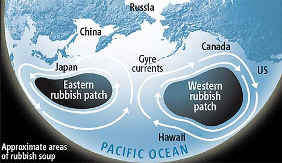

Plastics in the Ocean
Affecting Human Health

Over a few decades, humans have managed to dump tons upon tons of garbage into the ocean. Of the most devastating elements of this pollution is that plastics takes thousands of years to decay. As a result, fish and wildlife are becoming intoxicated. Consequently the toxins from the plastics have entered the food chain, threatening human health. In the most polluted places in the ocean, the mass of plastic exceeds the amount of plankton six times over. This is a large piece of evidence that leaves the problem of polluted oceans undeniable. It is upsetting that more of clean up effort is not taking place.
The Three Plastic Islands
The Great Pacific Garbage Patch, also know as the Pacific Trash Vortex or gyre, is located in the central North Pacific Ocean and is larger than the state of Texas. There are also garbage patches in the Indian and Atlantic ocean. The patches are defined as containing a higher amount of plastic as compared to surrounding oceans. To date, five patches in total have been discovered.
Plastics are transported and converge in the ocean where currents meet. This means that huge plastic islands are made as a result. SES (Sea Education Society) scientists studied plastics in the Atlantic and calculated there are 580,000 pieces of plastic per square kilometer.
Sources of Plastic Toxins Entering the Oceanic Food Chain
As far as plastic entering the ocean, about 20% of the trash comes from ships and platforms that are offshore. The rest sources from litter being blown into the sea, picked up by tides on the beach, or intentional garbage dumping. The worse part is, these plastics don't biodegrade, so they break up into tiny pieces that are consumed by fish and sea mammals. Plastic is killing more than 100,000 sea turtles and birds a year from ingestion and entanglement. To learn more visit Project Green Bag.
Chemicals in plastics are released into the water as well as the atmosphere. Fish easily become contaminated from the chemicals in the water. This is a direct link of how plastic chemicals enter the food chain.

Location of Plastic Islands in Ocean.
Photo credit: Earthly Issues, Charles Welch, http://www.earthlyissues.com/plastic.htm
Plastics getting to Humans Impacting Health
Different plastics spread throughout the ocean. As Styrofoam breaks into smaller parts, polystyrene components in it sink lower in the ocean, so that the pollutant spreads throughout the sea column.
In fact, not only do the toxins in plastic affect the ocean, but acting like sponges, they soak up other toxins from outside sources before entering the ocean. As these chemicals are ingested by animals in the ocean, this is not good for humans. We as humans ingest contaminated fish and mammals.
There are different types of ways that plastic is dangerous for humans. Direct toxicity from plastics comes from lead, cadmium, and mercury. These toxins have also been found in many fish in the ocean, which is very dangerous for humans. Diethylhexyl phthalate (DEHP) contained in some plastics, is a toxic carcinogen. Other toxins in plastics are directly linked to cancers, birth defects, immune system problems, and childhood developmental issues.
Other types of toxic plastics are BPA or health-bisphenol-A, along with phthalates (mentioned above). Both of these are of great concern to human health. BPA is used in many things including plastic bottles and food packaging materials. Over time the polymer chains of BPA break down, and can enter the human body in many ways from drinking contaminated water to eating a fish that is exposed to the broken down toxins. Specifically, BPA is a known chemical that interferes with human hormonal function.
Rolf Halden, associate professor in the School of Sustainable Engineering and Arizona State University has studied plastics adverse effects on humans and has thus far concluded that and exact outline of health effects of plastics on humans is almost impossible to determine. This is due to the fact that the problem of plastic contamination in humans is globally spread; there are almost no unexposed subjects. That being said, it is evident that the chemicals are not healthy for humans.
Prevention of Contamination
As quoted by UN Environment Programme Executive Director Achim Steiner,
"Marine debris – trash in our oceans – is a symptom of our throw-away society and our approach to how we use our natural resources."
Our tendency as humans to be irresponsible about cleaning up after ourselves is about to get us in trouble. We risk losing many species in the ocean as well as negatively affecting ourselves. The average person produces half a pound of plastic waste every day. No wonder the oceans are filling up with waste!
I think part of the problem is that we don't recognize how this issue starts with the individual. There are obviously life style changes we can make to solve this problem. We just have to be willing to accept this issue and look past our denial. The government also needs to make regulations on plastics if anything is going to change.
Surprisingly, there is little to no information on governmental websites about pollution in the oceans. I think they are afraid to address the problem; it is a costly fix. However there have been some treaties formed to minimize the amount of trash entering the oceans. This is still not enough. To see more on EPA laws and treaties visit US Environmental Protection Agency. These grassroots organizations are vital then to the protection of the oceans, striving to get information out about this tragic pollution. We should really all be involved though, it is everyone's responsibility. Lets make these changes before it is too late and we kill the all oceanic life, or even our own.
This article first appeared on https://serc.carleton.edu/NAGTWorkshops/health/case_studies/plastics.html